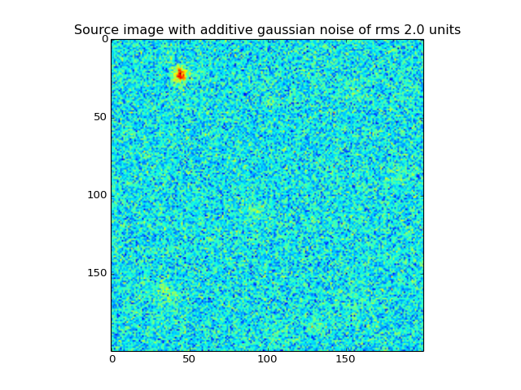
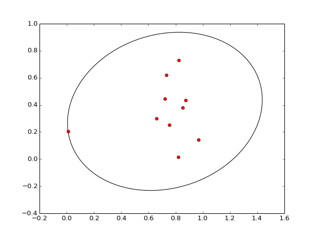
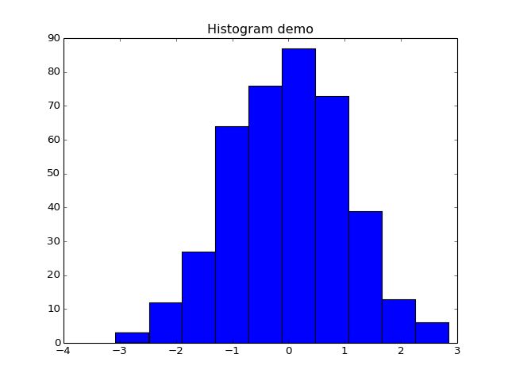

plot module¶
- plot.add_gaussian_noise(mean, sd, data)[source]¶
Adds indpendent gaussian noise of given rms units
Parameters: mean : float
Mean of the gaussian . We mostly use zero
sd : float
Standard deviation (i.e RMS) of the noise
data : array
data to which the noise is added
Returns: noised : array
noised data
Examples
>>> import plot >>> srces = [[43.71, 22.91, 10.54, 3.34], [101.62, 40.60, 1.37, 3.40], [92.63, 110.56, 1.81, 3.66], [183.60, 85.90, 1.23, 5.06], [34.12, 162.54, 1.95, 6.02], [153.87, 169.18, 1.06, 6.61], [155.54, 32.14, 1.46, 4.05], [130.56, 183.48, 1.63, 4.11]] >>> height = 200a >>> width = 200 >>> im_data = plot.make_source(srces, height, width) >>> z = plot.add_gaussian_noise(0, 2.0, im_data)
(Source code, png, hires.png, pdf)

{kind=link}
{kind=link}
- plot.affine_transform(vertices, transform)¶
- plot.count_bboxes_overlapping_bbox(bbox, bboxes)¶
- plot.make_random_source(limits, width, height, number_of_sources)[source]¶
Makes an Image with randomly distributed sources
Parameters: limits : 2Darray
prior limits
width : int
width of the image
length : int
length of the image
number_of_sources : int
Number of sources
Returns: z : array
Source Image
Examples
>>> import plot >>> lim = [[0.0, 200.0], [0.0, 200.0], [1.0, 14.0], [2.0, 9.0]] >>> height = 200 >>> width = 200 >>> number_src = 7 >>> z = plot.make_random_source(lim, width, height, number_src)
(Source code, png, hires.png, pdf)

{kind=link}
{kind=link}
- plot.make_source(src_array, height, width)[source]¶
Returns the source image with numpy format
Parameters: src_array : array
Array of source objects
height : int
height of the image
width : int
width of the image
Returns: z : array
Source image in numpy format
Examples
>>> import plot >>> height = 200 >>> width = 200 >>> srces = [[43.71, 22.91, 10.54, 3.34], [101.62, 40.60, 1.37, 3.40], [92.63, 110.56, 1.81, 3.66], [183.60, 85.90, 1.23, 5.06], [34.12, 162.54, 1.95, 6.02], [153.87, 169.18, 1.06, 6.61], [155.54, 32.14, 1.46, 4.05], [130.56, 183.48, 1.63, 4.11]] >>> im_data = plot.make_source(srces, height, width)
(Source code, png, hires.png, pdf)

{kind=link}
{kind=link}
- plot.plot_ellipse(points)[source]¶
Plots minimum bounding ellipse around a set of points
Parameters: points : 2Darray
Two dimensional array for plotting the ellipse
Examples
>>> import plot >>> import numpy as np >>> X = np.random.rand(10,2) >>> plot.plot_ellipse(X)
(Source code, png, hires.png, pdf)

{kind=link}
{kind=link}
- plot.plot_histogram(data, bins, title)[source]¶
Shows the histogram of a 1D data.
Parameters: data : array
data to be shown in histogram format
bins : int
number of bins to hold
title : str
title of the plot
Examples
>>> import plot >>> import numpy as np >>> X = np.random.randn(400) >>> plot.plot_histogram(X, 10, "Histogram demo")
(Source code, png, hires.png, pdf)

{kind=link}
{kind=link}
- plot.show_scatterplot(X, Y, title, height, width)[source]¶
Parameters: X : array
x coordinates of the data
Y : array
y coordinates of the above data. Same shape as above
title : str
title of the scatter plot
height : int
height limit of the scatter plot
width : int
width limit of the scatter plot
Examples
>>> import plot >>> import numpy as np >>> X = np.random.randn(400) >>> Y = np.random.randn(400) >>> plot.show_scatterplot(X, Y, "scatter plot demo", 400, 400)
(Source code, png, hires.png, pdf)

{kind=link}
{kind=link}
- plot.show_source(height, width, sources)[source]¶
Shows a 2D xy plot of the sources characterized by parameters [X, Y, A, R]
Parameters: height : int
Height of the image
width : int
width of the image
sources : array
Array of source objects to show
Examples
>>> import plot >>> from sources import Source >>> import numpy as np >>> height = 200 >>> width = 200 >>> Sources = [] >>> for i in range(4): >>> a = Source() >>> a.X = np.random.uniform(0.0, 200.0) >>> a.Y = np.random.uniform(0.0, 200.0) >>> a.A = np.random.uniform(1.0, 15.0) >>> a.R = np.random.uniform(2.0, 9.0) >>> Sources.append(a) >>> plot.show_source(height, width, Sources)
(Source code, png, hires.png, pdf)

{kind=link}
{kind=link}
- plot.update_path_extents(path, trans, bbox, minpos)¶